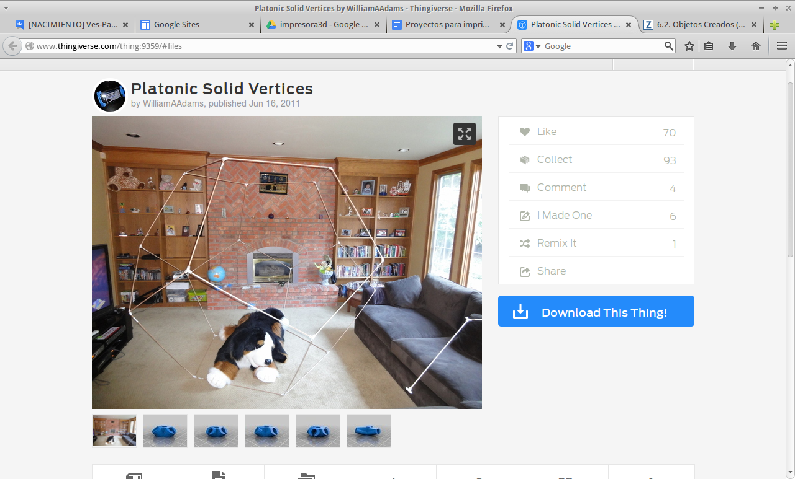
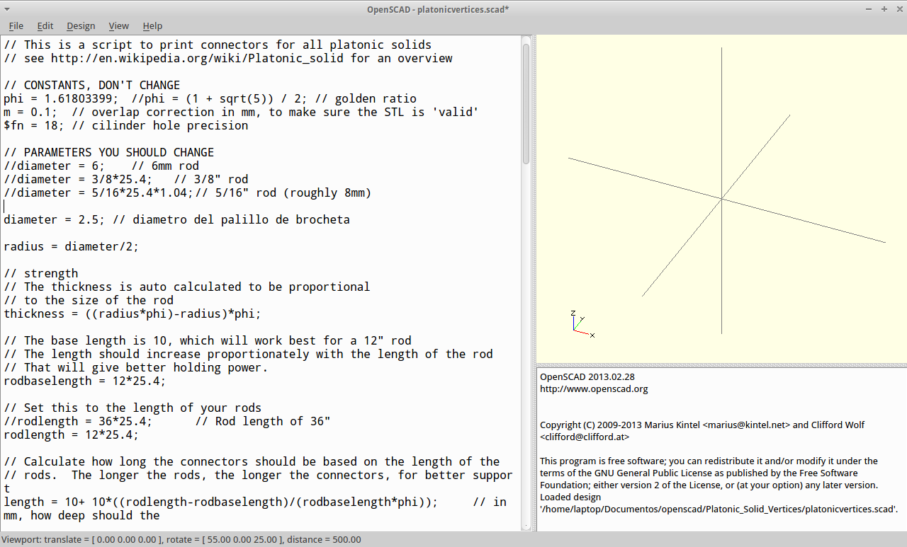
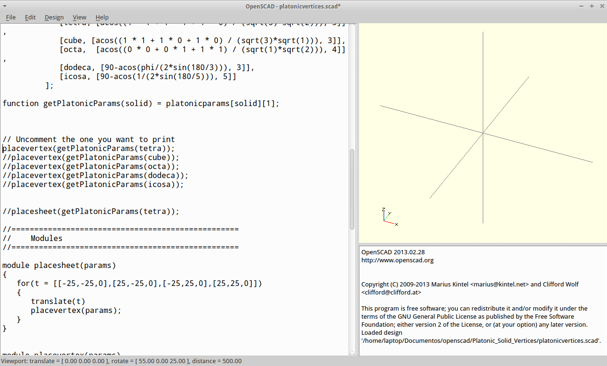
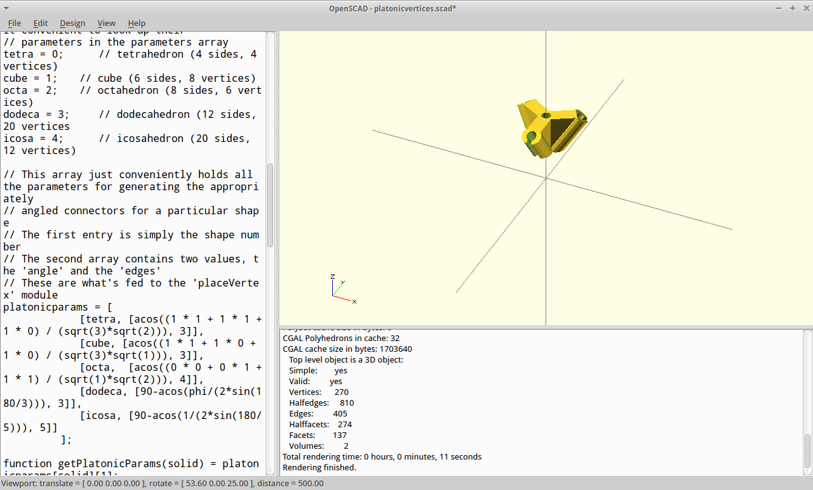
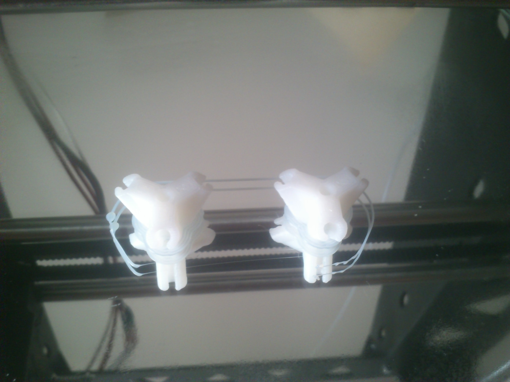
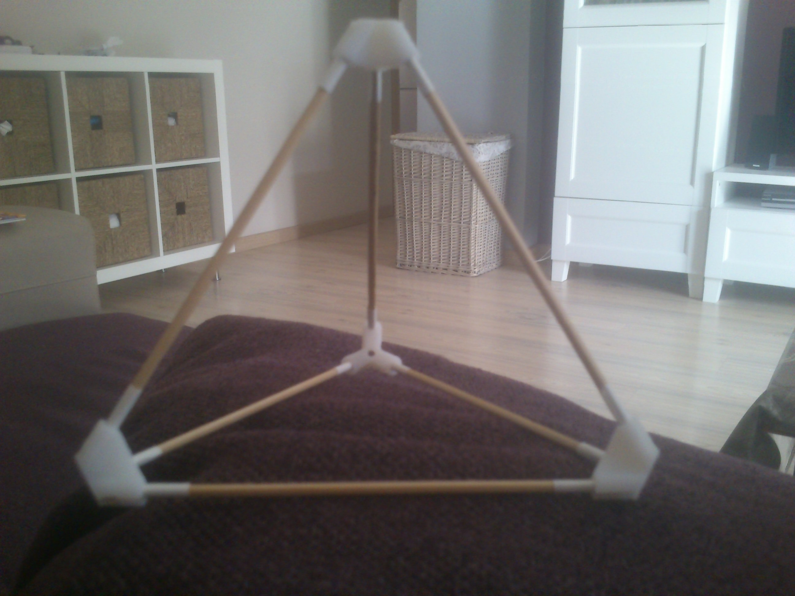

Actividades de Geometría¶
En este bloque se agrupan aquellas actividades relacionadas con geometría
Poliedros Regulares¶
Material necesario: Impresora 3D, palillos de brocheta.
En esta actividad vamos a crear los poliedros regulares con la ayuda de piezas impresas y palillos de brochetas.
Para saber la cantidad de vértices y de aristas (piezas impresas y palillos), podemos ayudarnos de la fórmula de Euler:
\(C-A=V+2\)(más información: http://gaussianos.com/la-formula-de-euler-una-maravilla-matematica/)
Un ejercicio que puede estar bien es, calcular los vértices, caras y aristas imaginándonos los poliedros mentalmente. El tetraedro, por su prefijo, tiene cuatro caras. Si nos imaginamos una cara apoyada sobre el suelo, al ser triangular, tendrá 3 vértices. La punta que queda en alto, nos daría el cuarto vértice.
La suma de caras y vértices sería 4+4=8.
The area of a circle is \(A_\text{c} = (\pi/4) d^2\).
ejercicio \(\frac{5^2}{x^3}\) .
Por lo tanto, de la fórmula de Euler, obtenemos que las aristas han de ser 6.
Entonces, necesitamos 6 palillos si queremos hacer un tetraedro
Lo siguiente será determinar la anchura de los palillos que hayamos comprado
Con el calibre podemos medir la anchura:
| Detalle del calibre |
{kind=link}
En mi caso, mide 2.5 mm.
Lo siguiente es generar el fichero stl que nos permitirá imprimir los vértices:
En thingiverse podemos encontrar los vértices parametrizables para el poliedro que queramos y para el grosor de la arista que queramos (fuente: http://www.thingiverse.com/thing:9359/):
{kind=link}
De los ficheros que aparecen para descargar nos interesa el de extensión scad.
El fichero de extensión scad, es el que nos va a permitir parametrizar los vértices a nuestro gusto. Para ello, abrimos el fichero con OpenScad y se modifica el grosor:
{kind=link}
Tenemos que añadir una línea en la que ponga diameter = 3.4;. Nota: En la foto aparece 2.5, pero con ese valor sale una pieza muy pequeña.
Un poco más abajo podemos parametrizar qué poliedro vamos a imprimir, para ello descomentamos (quitamos los //) en la línea que pone: placevertex(getPlatonicParams(tetra));
{kind=link}
Sólo nos queda compilar y renderizar (F6). Con esto obtendremos nuestro objeto en la parte de la derecha de la pantalla:
{kind=link}
Paso 4: Imprimir los vértices y montar:
Detalle de dos vértices impresos:
{kind=link}
El tetraedro montado:
{kind=link}
No obstante si no tienes impresora 3d, siempre puedes usar como vértices gominolas. Aunque si decides hacerlo de esta manera, recuerda llevar vértices de sobra porque seguro que alguno se pierde por el camino ...